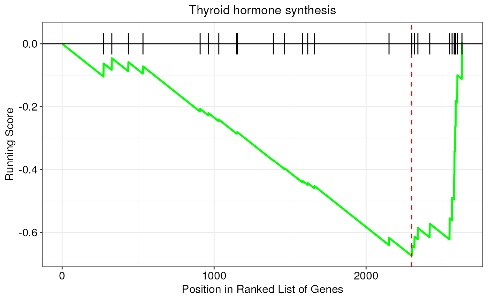

R/visualization.R
gseaPlot.RdThis function creates a classic enrichment plot to show the results of
gene set enrichment analyses (GSEA). In particular, this function takes as
input GSEA results originating from the enrichGenes() function, and
returns a ggplot2 object with GSEA plot. In this kind of plots, the
running enrichment score (ES) for a given pathway is shown on the y-axis,
whereas gene positions in the ranked list are reported on the x-axis.
gseaPlot(
enrichment,
pathway,
showTitle = TRUE,
rankingMetric = FALSE,
lineColor = "green",
lineSize = 1,
vlineColor = "red",
vlineSize = 0.6
)An object of class
FunctionalEnrichment containing
enrichment results
It must be the name of a significantly enriched term/pathway for which we want to produce a GSEA plot (e.g. 'Thyroid hormone synthesis')
Logical, whether to add the name of the pathway/term as plot title. Default is TRUE
Logical, whether to show the variations of the ranking metric below the plot. Default is FALSE
It must be an R color name that specifies the color of
the running score line. Default is green. Available color formats include
color names, such as 'blue' and 'red', and hexadecimal colors specified
as #RRGGBB
The line width of the running score line. Default is 1
It must be an R color name that specifies the color of
the vertical line indicating the enrichment score (ES). Default is red.
Available color formats include color names, such as 'blue' and 'red', and
hexadecimal colors specified as #RRGGBB
The line width of the vertical line indicating the
enrichment score (ES). Default is 0.6
An object of class ggplot containing the GSEA plot.
# load example FunctionalEnrichment object
obj <- loadExamples("FunctionalEnrichment")
# extract results
res <- enrichmentResults(obj)
# plot results
gseaPlot(obj, pathway = "Thyroid hormone synthesis")
